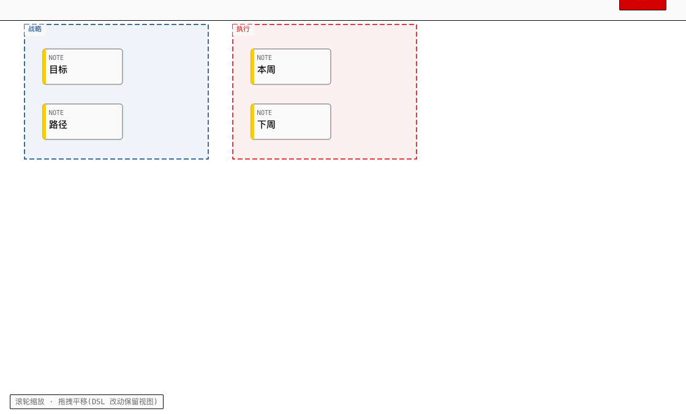
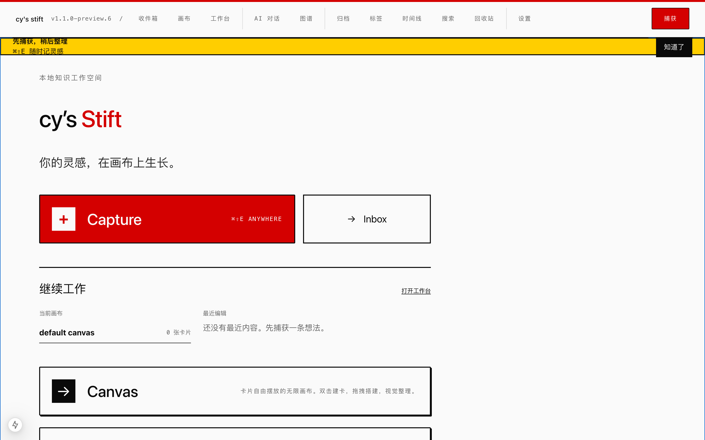

本地优先的灵感画布。捕获、整理、建立关系、搜索找回、继续编辑和完整恢复保持在同一条工作流里；画布也能用文字安全读写。

1.0.0下面是一段 cys-dsl。左侧改一个字,右侧画布实时变。 试试关系式坐标(right-of / below)—— 正式应用内会先显示元素 diff，再经确认门提交；画布变化后旧编辑不会覆盖新状态。
不是导出一份文件，是画布本身就有文字形态。所以 AI 能直接驱动它、改动可 diff、跨设备可迁移、应用前可确认。
[frame #week] @pos(40,40) @size(440,280) @text("本周") @color(blue)
[card #idea] @pos(72,84) @color(yellow) @title("一条线索")
[card #next] @pos(262,84) @color(red) @title("下一步")
[arrow #a] from #idea to #next @label("推出")
读写文字即可改画布，不必调专有 API 或塞 JSON。
文字差异即画布差异，版本一目了然。
复制文本即交换格式，不依赖私有文件。
预演差异、修订守卫，过期编辑不覆盖。
想法落画布是起点，不是终点。五个动作保持在同一条上下文里——不必在应用间来回切换。
快捷键 3 秒，先保住想法
Inbox 里决定归属
摆开、连接、重排
搜索命中回到原位
工作台把它变成结果
自研 Canvas 2D 引擎驱动画布；本地优先，数据默认留在你的机器。

核心不是功能堆叠，而是一条可恢复的工作流：捕获 → 待整理 → 画布 → 找回 → 继续编辑。
快速捕获先保住想法，Inbox 再决定目标画布；画布搜索命中后回到原位置，工作台继续编辑。
画布可以转成可读文本。修改先解析、预演并显示元素差异；确认后才应用，过期 revision 会被拒绝。
支持 OpenAI、Anthropic 与本地 Ollama。AI 提案走确认门和 stale guard，未配置时核心功能照常使用。
不依赖第三方画布库,2D Canvas 自研引擎 —— 轻量、可控、可剥离。几何 / 渲染 / 交互各司其职,六种元素自由组合。
JSON 导入先 dry-run，再选择 replace / merge；写入前创建本机恢复点，跨 store 失败会回滚。
Source / Split / Preview 三态继续编辑。标题、列表和正文换行正确渲染，卡片预览不再暴露 Markdown 语法。
适合需要慢慢想、慢慢连的人——捕获快，整理慢，关系随想随建。
文献、想法、引用分门别类，关系一眼可见。
概念拆解、对比、回顾，画布帮你看见结构。
目标、依赖、下一步摆在同一张图上。
模糊的想法慢慢长出来，不急着归类。
Web 静态站已部署可体验；macOS 已完成本机构建与启动烟测。签名公证、原生安装验收、Windows / Android 当前包仍是开放项。